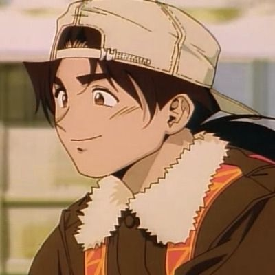

Golden Boy’un Hikâyesi
Golden Boy, üniversiteyi bırakıp Japonya’yı bisikletiyle dolaşan Kintaro Oe’nin hikâyesini anlatır. Her bölümde farklı bir işe girer, yeni insanlarla tanışır ve komik, bazen de düşündürücü olaylar yaşar. Kintaro’nun merakı ve öğrenme isteği, onu her deneyimden ders çıkaran bir karakter haline getirir.
Golden Boy’un Temaları
Öğrenme ve Merak: Kintaro her işten bir şey öğrenmeye çalışır.
Komedi ve Mizah: Saflığı ve zekâsı, komik durumlara yol açar.
Macera: Bisikletiyle Japonya’yı dolaşması, özgürlük ve keşif duygusunu yansıtır.
İnsan İlişkileri: Her bölümde farklı insanlarla kurduğu bağlar, hikâyeyi zenginleştirir.
Golden Boy’da Unutulmaz Bölümler
Computer Lesson: Kintaro’nun bilgisayar öğrenme çabaları.
Temptation of the Maiden: Restoran ve aşk hikâyesi.
Danger! The Virgin’s First Love: Motor yarışları ve romantizm.
Swimming in the Sea of Love: Yüzme kulübünde geçen olaylar.
Bento Box: Aile ve iş hayatı üzerine.
Anime Industry: Kintaro’nun anime sektöründe çalışması.
Golden Boy’daki Karakterler
Kintaro Oe: 25 yaşında, meraklı, öğrenmeye açık, saf ama zeki.
Yan Karakterler: Her bölümde farklı kişilerle tanışır, onların hayatına dokunur.
Bisikleti: Onun özgürlüğünün ve yolculuğunun sembolü.
